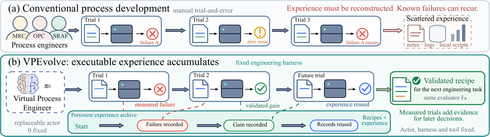
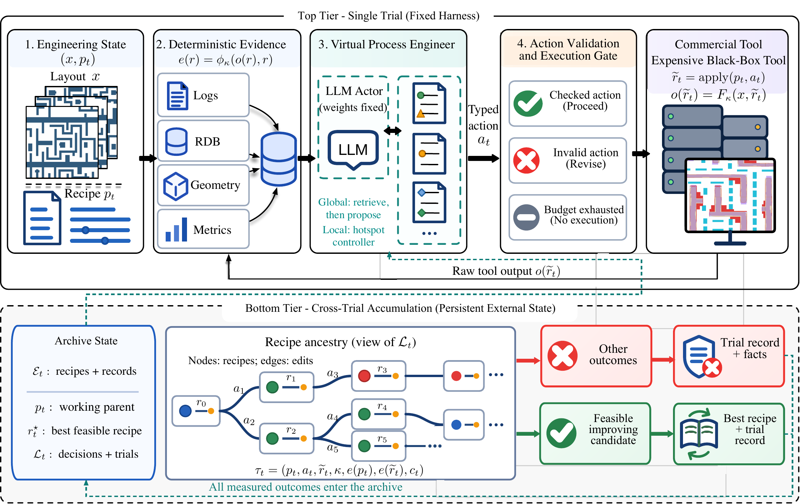

A VIRTUAL PROCESS ENGINEER
Better recipes.
Sharper patterns.
Experience retained.
A frozen language model develops lithography recipes through global search, pattern-guided local correction, and an archive of measured trials.


Dense Metal45 · verified endpoint · measured geometry
Lower mean window-max EPE
than the strongest baseline
Scoring windows
10 Poly + 10 Metal1
Feasible improvements
of at least 0.1 nm
Retained MRC violations
across all eight methods
01 / FROM A RUN TO THE NEXT DECISION
A trial ends.
Its evidence stays.
Process engineering is more than choosing a number. A useful recipe must move the printed contour, respect manufacturing limits, and address the errors that remain.
VPEvolve keeps the recipe, intervention, physical response, and outcome together. Later proposals retrieve relevant trials and check their claims against that evidence.

INSIDE THE PHYSICAL RESULT
One pattern.
Five layers of evidence.
Look through the target layout, corrected mask, assist features, nominal resist contour, and process variation band. Explore two dense windows from the ten-candidate main study. Switch from the whole layout to a 180 nm detail of the measured hotspot.
Loading measured geometry…
Watch the printed shape change.
Replay every measured trial ↗Dense Poly19 and Metal45 are selected illustrations from the main study. Close-ups stay centered on the worst gauge just before local correction begins. The full-window maximum can move elsewhere. All layers are co-registered; resist is the simulated nominal contour, not a photograph.
02 / THE HARNESS
Search the recipe.
Then locate the bottleneck.
Fixed tools and checks connect the actor to physical evidence. Self-evolution happens through accumulated experience and retained recipes; the model weights and harness code stay fixed during a run.

Improve the common recipe first.
Change editable recipe settings such as fragmentation, movement limits, and feedback. Search begins globally, with every candidate checked against the same fixed measurement contract.
Both stages share one evaluation budget. Local search follows diminishing global gains; the scheduler also reserves evaluations for spatial probes.
03 / THE HOTSPOT, UP CLOSE
Global settings.
Local precision.
Start at the worst remaining gauge after global exploration. A pattern-guided rule moves selected mask edges. Inspect the same location before and after local correction—at its true physical scale.
Loading measured hotspot…
The fixed-focus error tracks one coordinate; the full-core maximum searches every gauge. These selected dense examples illustrate the mechanism. The paired experiment below uses all six assigned windows.
SAME START. DIFFERENT NEXT STEP.
Where should the next four evaluations go?
Global tuning or local rules, from identical intermediate recipes and preceding observations.
| Layer | Shared start | Global continuation | Local continuation | Local reduction from start |
|---|
On Metal1, local correction reduces mean window-maximum EPE by 18.6%; continued global tuning retains the starting value. Poly endpoints are close. Every endpoint meets the original quality limits.
Four-candidate budget cap per branch, plus one endpoint repeat. Actual global/local OPC calls: 27/30. One global branch stops at its proposal limit after one candidate; all other branches complete four. All twelve endpoints reproduce.
04 / CURRENT PHYSICAL EVALUATION
Eight methods.
One measurement contract.
Twenty fixed 10 × 10 µm scoring windows, one search seed, and up to ten candidates per method and window. Switch layers to see where the gains come from.
33.3% below Raw Actor
| Method | Max EPE ↓nm | Avg. EPE ↓nm | PVB ↓µm* | MRC ↓count | Success% | OPC / LLMtotal calls |
|---|---|---|---|---|---|---|
| Loading the verified results… | ||||||
Max EPE averages the maximum within each window; Avg. EPE averages per-window mean errors. *PVB is band area divided by target-edge length (µm). All quality metrics use the same retained recipe. Success requires a feasible ≥ 0.1 nm maximum-EPE reduction. These windows come from one layout family and have prior development exposure.
What do OPC / LLM counts include?
Total calls in each group, not a ratio. OPC includes candidate evaluations and one endpoint repeat per window. Model calls include rejected proposals. Shared calibration (40 calls), historical experience acquisition, development pilots, and native pattern diagnostics are separate costs. Budget caps are matched; actual use can differ.
05 / DOES EXPERIENCE HELP?
Same starting recipe.
Different access to experience.
Six paired windows separate record access, local actions, and how new experience is reused. Starting recipes, physical budget caps, and quality limits are matched.
Reviewed reuse reaches 11.090 nm, compared with 11.326 nm for a frozen bank and 11.977 nm for direct reuse.
Each condition uses 66 OPC calls, including six endpoint repeats. Reviewed reuse combines complete trial facts with applicability-checked highlights; its model-call count includes review calls. The main 20-window study uses direct reuse. These are paired single-seed comparisons.